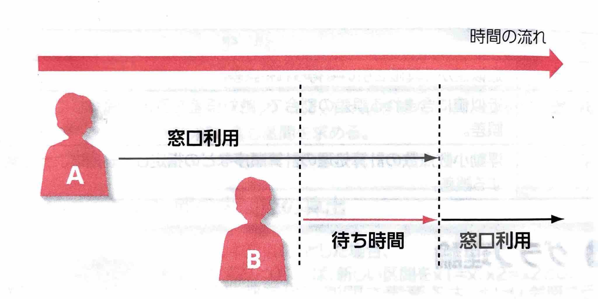
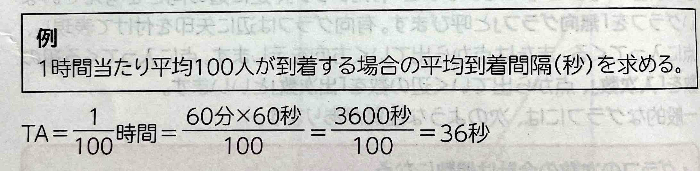
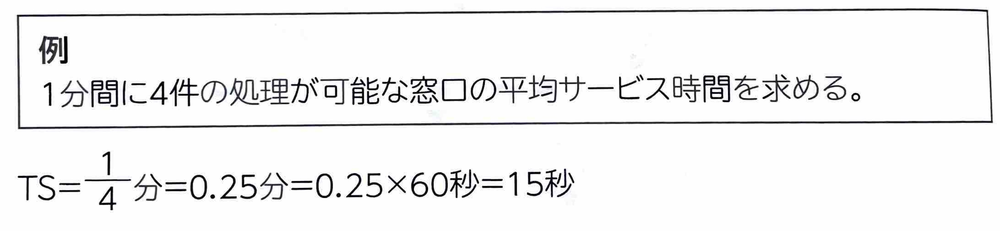
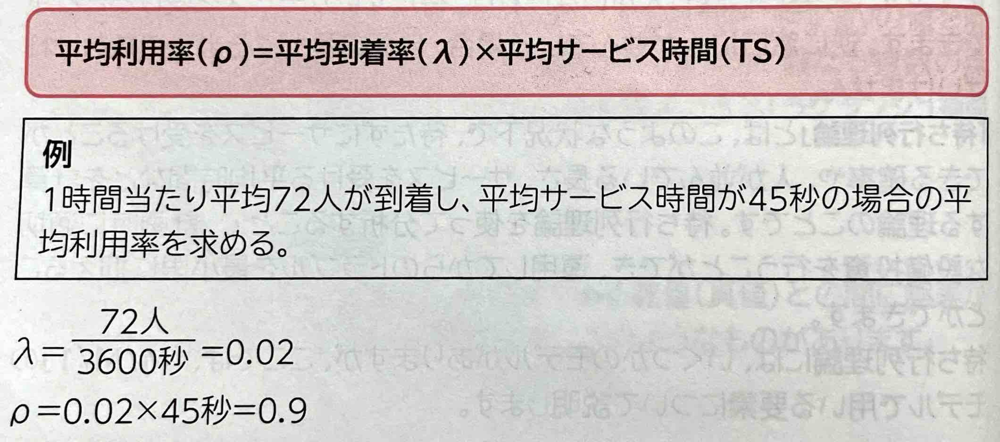
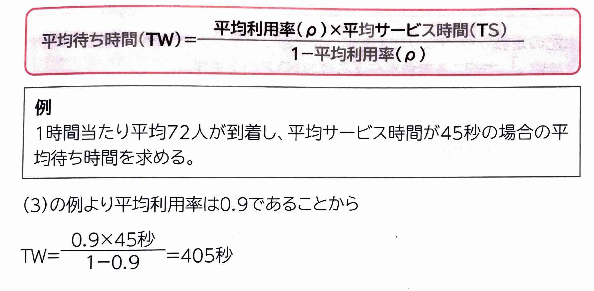
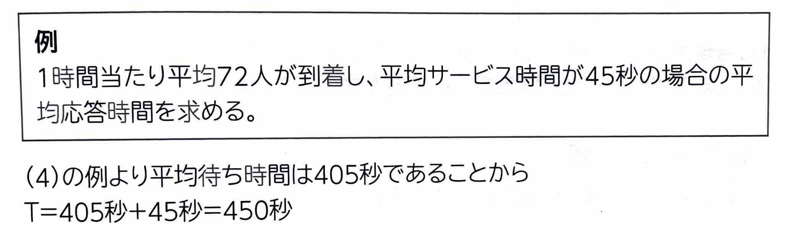

【 待ち行列理論 】
銀行の窓口を考えたとき、人が銀行に到着して、窓口でサービスを受けます。このとき、窓口に誰も人がいなければ、待たずにサービスを受けることができます。逆に窓口に人が並んでいる場合、自分の番がくるまで待たなければいけません。
｢待ち行列理論｣とは、このような状況下、待たずにサービスを受けることができる確率や、人が並んでいる長さ、サービスを受ける平均時間などを計算する理論のことです。待ち行列理論を使って分析することで、計画時に適切な設備投資を行うことができ、運用してからのトラブルを最小限に抑えることができます。
待ち行列理論には、いくつかのモデルがありますが、ここでは、｢M/M/1｣のモデルで用いる要素について説明します。

(1)平均到着率
｢平均到着率｣とは、単位時間(秒)当たりに到着する人の割合(人数)のことです。｢\(\lambda\)(ラムダ)｣の記号で表します。
ある人が到着してから次の人が到着するまでの時間間隔を｢到着間隔｣といい、｢平均到着間隔(TA:Time Arrival)｣は\(\frac{1}{\lambda}\)となります。

(2)平均サービス率
｢平均サービス率｣とは、ひとつの窓口でどれだけサービスを処理できるかの割合のことです。｢\(\mu\)(ミュー)｣の記号で表します。
並んでいる人を処理する時間(秒)を｢サービス時間｣といい、｢平均サービス時間(TS:Time Service)｣は\(\frac{1}{\mu}\)となります。

(3)平均利用率
｢平均利用率｣とは、窓口がどれだけ利用されているかのことです。｢\(\rho\)(ロー)｣の記号で表します。
平均利用率は、次の計算式で求めることができます。

(4)平均待ち時間
｢平均待ち時間(TW:Time Wait)｣とは、サービスを受けるまでの待ち時間のことで、次の計算式で求めることができます。

(5)平均応答時間
｢平均応答時間(T:Time)｣とは、平均待ち時間と平均サービス時間を足した時間のことです。
